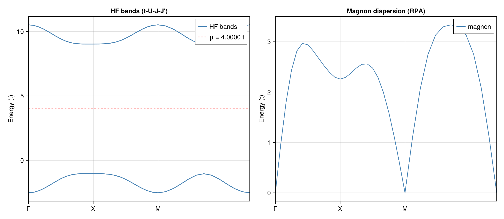

Example: Magnon Dispersion in the t-U-J-J' Model
This example computes the magnon dispersion of the square-lattice t-U-J-J' model at half-filling using RPA on top of Hartree-Fock. It demonstrates how nearest-neighbor ($J$) and next-nearest-neighbor ($J'$) Heisenberg exchange interactions modify the spin-wave spectrum, and verifies the Goldstone theorem in the presence of these additional couplings.
Physical Model
\[H = -t \sum_{\langle ij \rangle,\sigma} (c^\dagger_{i\sigma}c_{j\sigma} + \text{h.c.}) + U \sum_i n_{i\uparrow}n_{i\downarrow} + J \sum_{\langle ij \rangle} \mathbf{S}_i \cdot \mathbf{S}_j + J' \sum_{\langle\langle ij \rangle\rangle} \mathbf{S}_i \cdot \mathbf{S}_j\]
\[t = 1\]
: nearest-neighbor hopping\[U = 8\]
: on-site Hubbard repulsion\[J = 1\]
: nearest-neighbor Heisenberg exchange ($J > 0$: antiferromagnetic)\[J' = 0.3\]
: next-nearest-neighbor Heisenberg exchange ($J' > 0$: frustrating)
The Heisenberg interaction is decomposed as:
\[\mathbf{S}_i \cdot \mathbf{S}_j = \frac{1}{2}(S^+_i S^-_j + S^-_i S^+_j) + S^z_i S^z_j\]
The NN coupling $J$ reinforces the Néel antiferromagnetic order already favored by the Hubbard $U$ term, while the NNN coupling $J'$ introduces frustration — it connects same-sublattice sites and competes with Néel order.
Magnetic Unit Cell
A $\sqrt{2}\times\sqrt{2}$ rotated unit cell with $\mathbf{a}_1 = (1,1)$, $\mathbf{a}_2 = (1,-1)$ containing two sublattices A and B (4 orbitals: A↑, A↓, B↑, B↓). Half-filling: 2 electrons per cell.
Method
- Hartree-Fock: momentum-space unrestricted HF (
solve_hfk) on a $12\times12$ $k$-grid with symmetry-breaking restarts. - RPA magnon spectrum:
solve_ph_excitationswithsolver=:RPAalong the path $\Gamma \to X \to M \to \Gamma$ (original square-lattice BZ).
Code
The Heisenberg interaction is defined using the generate_twobody interface with operator ordering (cdag, :i, c, :i, cdag, :j, c, :j) — density-like pairing on two distinct sites:
# Heisenberg S_i · S_j for an arbitrary bond set and coupling strength
function heisenberg_interaction(dofs, bond_set, coupling)
generate_twobody(dofs, bond_set,
(deltas, qn1, qn2, qn3, qn4) -> begin
s1, s2, s3, s4 = qn1.spin, qn2.spin, qn3.spin, qn4.spin
if (s1, s2, s3, s4) == (1, 2, 2, 1) # S⁺_i S⁻_j
return coupling / 2
elseif (s1, s2, s3, s4) == (2, 1, 1, 2) # S⁻_i S⁺_j
return coupling / 2
elseif s1 == s2 && s3 == s4 # Sᶻ_i Sᶻ_j
return s1 == s3 ? coupling / 4 : -coupling / 4
else
return 0.0
end
end,
order = (cdag, :i, c, :i, cdag, :j, c, :j))
end
heisen_nn = heisenberg_interaction(dofs, nn_bonds, J)
heisen_nnn = heisenberg_interaction(dofs, nnn_bonds, Jp)
# Combine Hubbard U + NN Heisenberg J + NNN Heisenberg J'
twobody = (ops = [hubbard.ops; heisen_nn.ops; heisen_nnn.ops],
delta = [hubbard.delta; heisen_nn.delta; heisen_nnn.delta],
irvec = [hubbard.irvec; heisen_nn.irvec; heisen_nnn.irvec])Goldstone theorem check
The Heisenberg terms $J \mathbf{S}_i \cdot \mathbf{S}_j$ and $J' \mathbf{S}_i \cdot \mathbf{S}_j$ are both SU(2)-invariant. Combined with the Hubbard $U$ (also SU(2)-invariant), the full Hamiltonian preserves continuous spin rotation symmetry. When the HF ground state spontaneously breaks this symmetry into the Néel state, the Goldstone theorem guarantees a gapless magnon at $\mathbf{q} = \Gamma$.
Running the Example
# Step 1: HF + RPA calculation
julia --project=examples -t 8 examples/Heisenberg/run.jl
# Step 2: plot
julia --project=examples examples/Heisenberg/plot.jlResults

Left panel: HF mean-field band structure. The Néel order opens a Mott gap, with the gap size controlled by $U$ and modified by $J$, $J'$.
Right panel: RPA magnon dispersion. The lowest branch is gapless at $\Gamma$ (Goldstone mode). Compared to the pure Hubbard model ($J = J' = 0$), the NN Heisenberg coupling $J$ enhances the magnon bandwidth, while the frustrating NNN coupling $J'$ softens the magnon at $X = (\pi, 0)$ — a precursor to potential incommensurate magnetic order at larger $J'/J$.